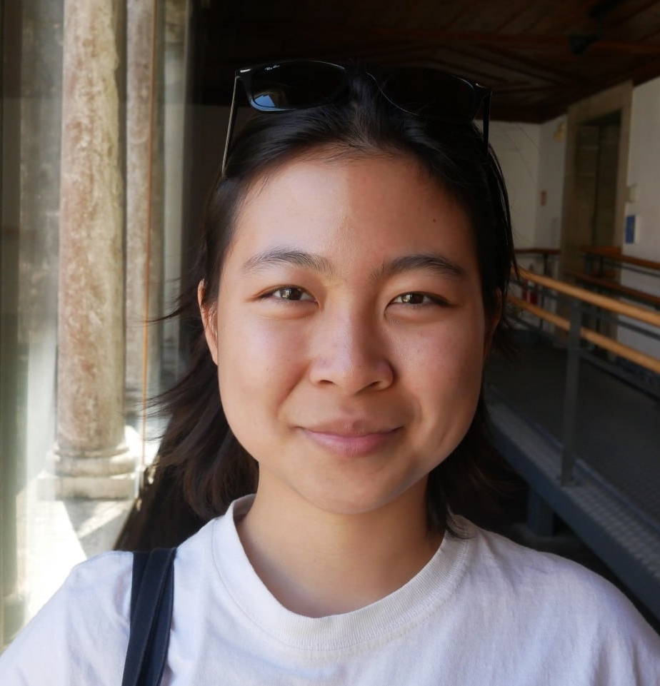

Nicole Yow Wei
PhD Candidate in History and Early Modern Studies at Yale University
Email: nicole (dot) yow (at) yale (dot) edu

Above: A person smiles innocuously at the camera.
I am a Ph.D. Candidate in History and Early Modern Studies interested primarily in the intellectual history of Southeast Asia and the Indian Ocean. My training is in Indonesian history and Malay manuscript studies. Through my dissertation project, I examine texts produced by Minangkabau itinerants and migrants who had scattered all over colonial Southeast Asia. I’m especially curious about how they mobilised literary form to negotiate complex social, political, theological, and economic worlds.
Translation is an important part of my academic practice, and I see this to be one of the most key (and incidentally also most fun) parts of my work as a scholar. It is my ambition that my work as a textual scholar might bring Classical Malay texts to as broad and as thoughtful an audience as possible.
I grew up in Singapore, and subsequently earned an A.B. in History from Brown University, as well as an M.A. in Southeast Asian Studies from Chulalongkorn University. I was named a 2023 recipient of the Singapore Teaching and Academic Research Talent (START) awards, and will be joining Nanyang Technological University as an Assistant Professor of History in 2030.
Until the end of 2027, I am based in Leiden, The Netherlands, where I am a visiting researcher at Leiden University and an affiliated fellow of the KITLV. Refereed Publications: 1. Yow, Nicole. “Unreading the Literary: The Hikayat Anggun Cik Tunggal and Malay Historical Tradition in an Age of Print.” Journal of Southeast Asian Studies 56, no. 1–2 (2025): 144–68. [link here] 2. De Langis, Theresa, Nicole Yow Wei, Tara Tran, and Cindy Anh Nguyen. "Feminist Trouble in Southeast Asia: An Invitation." Verge: Studies in Global Asias 11, no. 1 (2025): 105-130. [link here] Non-Refereed Publications / Public-Facing Writing 1. Yow, Nicole. “Pasts Without History: Ambiguous Politics in Patani Historical Thought (อดีตปราศจากประวัติศาสตร์: การเมืองคลุมเครือทางความคิด ประวัติศาสตร์ปตานี). ” In Weaving Diversities in Southeast Asia: Political, Social, and Cultural Perspectives (Proceedings from the Fifteenth Southeast Asian Studies Symposium). Bangkok: Chulalongkorn University, 2022. 2. Review of Ronit Ricci, Banishment and Belonging: Exile and Diaspora in Sarandib, Lanka and Ceylon [link here] +++ You can see my CV here. My Yale History department website is accessible here. The following things currently occupy my waking mind: Translations (if I haven't published them, I'm trying to)
Translations-in-progress If any of the above resonates with the interests that you have, please do not hesitate to email me! +++ Miscellaneous and FAQ